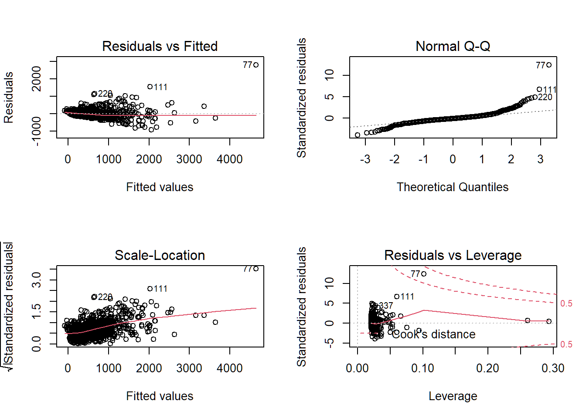
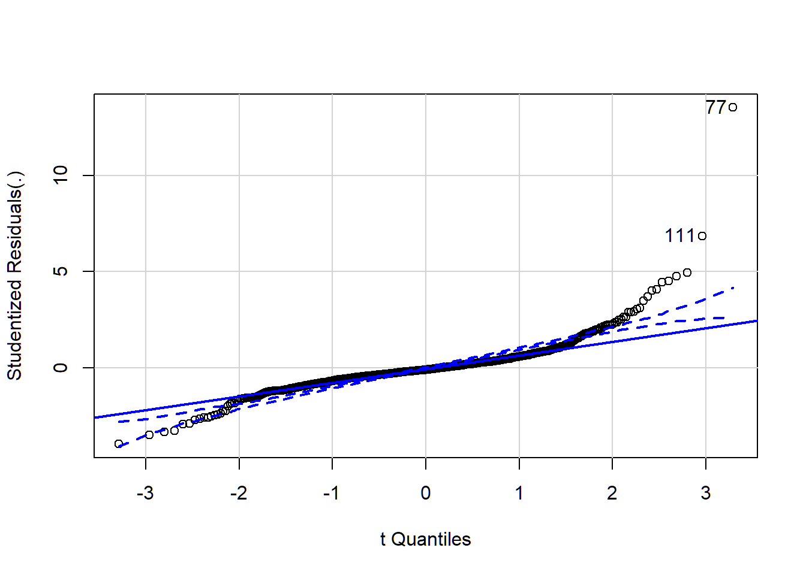
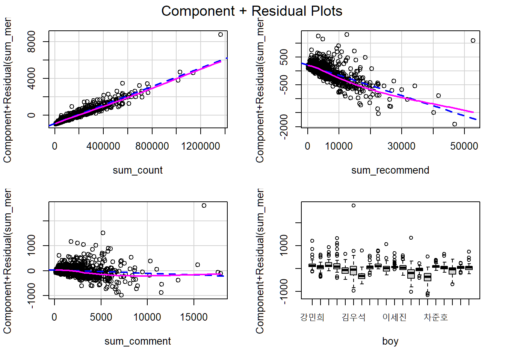
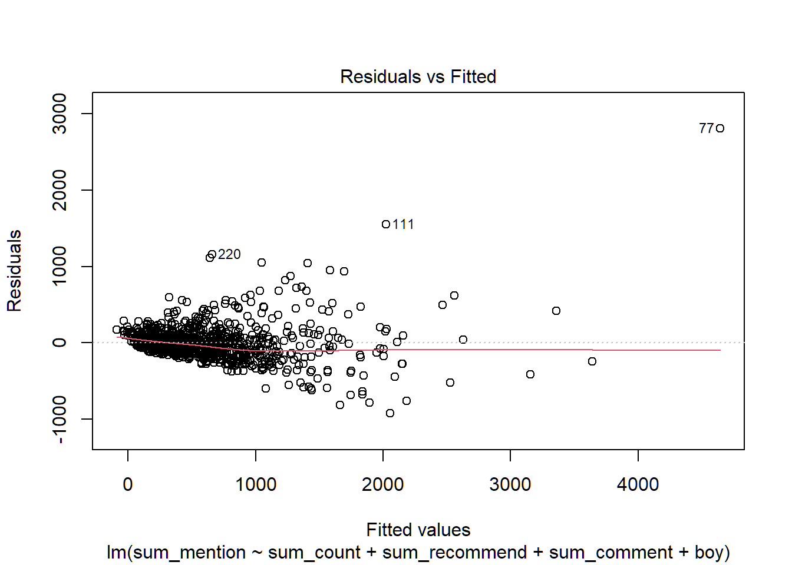
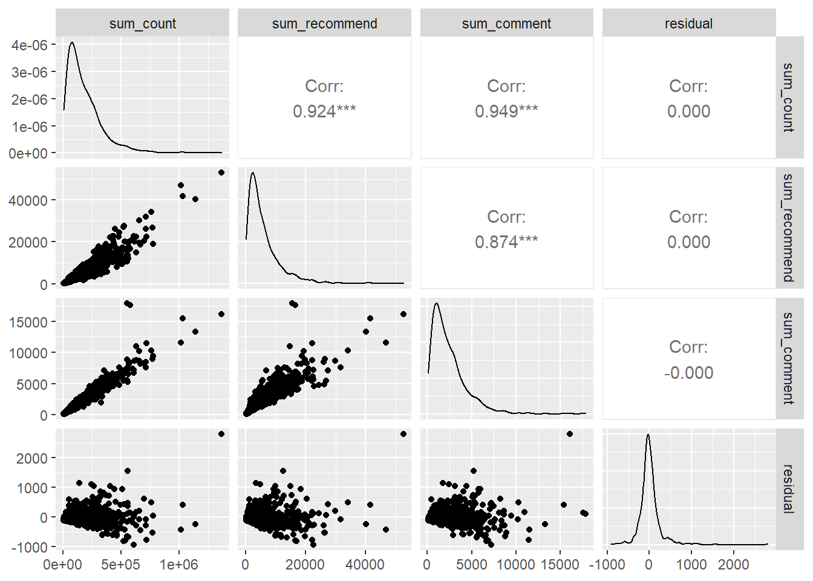
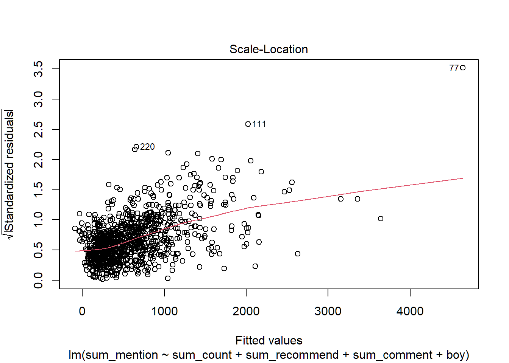
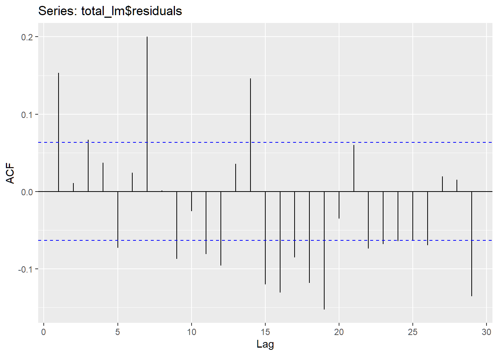

Chapter 7 다중회귀분석
7.1 데이터 분할
언급량(sum_mention)을 종속변수로 하는 다중회귀모델을 생성하고, 모델이 추정하는 예측치를 바탕으로 순위 매겨보겠습니다. 여기서는 전체 데이터 중 마지막 방송이 방영된 날의 데이터를 테스트 데이터로, 그 이전의 데이터를 모델의 학습데이터로 분할해 주겠습니다.
library(dplyr)
library(ggplot2)
library(lubridate)
library(stringr)
# train & test
total_train <- total %>% filter(p_ymd != '2019-07-19') # 마지막날 이전 데이터
total_test <- total %>% filter(p_ymd == '2019-07-19') # 마지막날 데이터그런 다음 댓글, 조회수, 추천수를 독립변수로 하여 언급량을 추정하는 다중회귀모델을 생성합니다.
7.2 모델 검정
생성한 회귀모델이 적절한 모델인지를 검정하는 과정이 필요로 합니다. 회귀분석이 지닌 기본적인 가정인 정규성, 선형성, 독립성, 등분산성을 검정하는 과정을 거쳐 모델이 적절한지를 파악하는 과정을 수행해 보도록 합니다. 생성한 모델을 plot()함수를 사용하여 잔차시각화를 진행합니다.

7.2.1 정규성
선형회귀에서는 오차항이 정규분포를 따라야합니다. 그러므로 오차에 속한 잔차 역시 정규분포를 따라야 하는 가정을 따라야 합니다. 만약 잔차들이 정규성을 따른다면 Q-Q Plot상의 점들이 45도 각도의 직선에 밀접합니다.

## [1] 77 111육안으로 보아도 정규성에 위배되는 것을 확인할 수 있습니다.
한편 shapiro.test()함수를 사용하면 더 정확하게 정규성을 검정할 수 있습니다. 잔차를 대상으로 Shapiro test 를 진행, p값이 기각역보다 크다면 잔차가 정규성을 띈다고 해석합니다.
##
## Shapiro-Wilk normality test
##
## data: total_lm$residuals
## W = 0.81877, p-value < 2.2e-167.2.2 선형성
독립변수는 종속변수와의 관계에서 선형성을 띄어야 하는 가정을 충족해야 합니다. 선형성은 회귀 모델에서 모델의 통계적 유의성 검정을 통해 추측할 수 있습니다. 만약 모델이 선형성을 충족한다면 모델에 대한 p값이 유의하게 나올 것입니다.
##
## Call:
## lm(formula = sum_mention ~ sum_count + sum_recommend + sum_comment +
## boy, data = total_train)
##
## Residuals:
## Min 1Q Median 3Q Max
## -924.50 -103.65 -20.83 76.50 2806.30
##
## Coefficients:
## Estimate Std. Error t value Pr(>|t|)
## (Intercept) 1.064e+02 3.585e+01 2.968 0.003072 **
## sum_count 5.060e-03 2.597e-04 19.483 < 2e-16 ***
## sum_recommend -3.656e-02 4.889e-03 -7.477 1.74e-13 ***
## sum_comment -1.373e-02 1.217e-02 -1.128 0.259436
## boy구정모 -1.040e+02 4.973e+01 -2.091 0.036813 *
## boy금동현 2.557e+01 4.893e+01 0.522 0.601449
## boy김민규 1.882e-01 4.937e+01 0.004 0.996959
## boy김요한 -2.484e+02 5.019e+01 -4.950 8.79e-07 ***
## boy김우석 -2.159e+02 5.564e+01 -3.880 0.000112 ***
## boy남도현 -4.851e+02 5.136e+01 -9.444 < 2e-16 ***
## boy손동표 -9.429e+01 4.893e+01 -1.927 0.054261 .
## boy송유빈 7.180e-01 4.900e+01 0.015 0.988312
## boy송형준 -1.344e+02 4.921e+01 -2.731 0.006426 **
## boy이세진 -6.016e+01 4.932e+01 -1.220 0.222881
## boy이은상 -1.124e+02 4.944e+01 -2.274 0.023186 *
## boy이진혁 -3.728e+02 5.100e+01 -7.311 5.68e-13 ***
## boy이한결 -2.169e+02 4.909e+01 -4.418 1.11e-05 ***
## boy조승연 -5.814e+02 6.327e+01 -9.189 < 2e-16 ***
## boy차준호 -7.508e+01 4.896e+01 -1.534 0.125470
## boy토니 -1.087e+02 4.900e+01 -2.218 0.026801 *
## boy한승우 -2.645e+02 4.980e+01 -5.311 1.36e-07 ***
## boy함원진 -1.252e+02 4.897e+01 -2.556 0.010745 *
## boy황윤성 -1.179e+02 4.890e+01 -2.412 0.016078 *
## ---
## Signif. codes: 0 '***' 0.001 '**' 0.01 '*' 0.05 '.' 0.1 ' ' 1
##
## Residual standard error: 239.4 on 937 degrees of freedom
## Multiple R-squared: 0.8115, Adjusted R-squared: 0.8071
## F-statistic: 183.4 on 22 and 937 DF, p-value: < 2.2e-16 car패키지에 있는 crPlots() 함수를 통해 개별 독립변수에 대한 선형성을 확인할 수 있습니다. 만약 plot에서 비선형성이 관찰된다면 이는 해당 변수가 선형성을 충족하지 못한것으로 볼 수 있습니다.

7.2.3 독립성
독립성 가정은 크게 세가지를 충족하여야 합니다. 첫째 모델의 예측값과 잔차간의 독립성. 둘째 독립변수와 잔차간의 독립성. 셋째 잔차의 자기상관성. 먼저 예측값과 잔차간의 독립성은 앞서 보았던 잔차그래프중 첫번째 그래프에서 확인할 수 있습니다.

생성된 그래프를 보면 이상치의 영향으로 인해 정확한 판단은 어렵지만 잔차가 무작위적으로 퍼져있는것이 아닌 특정 부분에 쏠려 있는것으로 보여 집니다. 만약 잔차에 패턴이 보인다면 이는 곧 모델이 패턴에 해당하는 규칙성을 누락했단 의미로 해석될 수 있으며 모델에 추가해야할 요소가 남아있음을 의미합니다.
독립변수와 잔차간의 독립성은 상관계수 및 분포도로 판단할 수 있습니다. 모델에서 사용된 독립변인과 잔차를 묶어 GGally::ggpairs() 함수를 통해 확인해 보도록 하겠습니다.
total_train %>%
select(sum_count, sum_recommend, sum_comment) %>%
mutate(residual = total_lm$residuals) %>%
GGally::ggpairs()
생성된 그래프를 보면 가운데를 기준으로 좌하단에는 변수간 산점도, 우상단에는 상관계수가 작성되어 있는 것을 확인할 수 있습니다. 여기에서 잔차(residual)와 각 독립변수(sum_count, sum_comment, sum_recommend)들 간의 상관계수는 0에 상회하는 것으로 거의 독립적인 것을 확인 할 수 있습니다. 그러나 각 독립변수들 간에 상관성이 높게 띄는것으로 보아 다중공선성이 크게 의심스러운 상황입니다.
마지막으로 잔차의 자기상관성은 car 패키지에 있는 durbinWatsonTest() 함수를 통해 진행할 수 있습니다. 더빈왓슨 테스트의 검정통계량 D-W Statistic 값은 0 ~ 4의 값을 가지며 0으로 가까울 수록 (잔차의) 양의 상관관계를, 4에 가까울수록 음의 상관관계를 가집니다. 2는 독립적인 것을 의미합니다. 여기서의 p_value는 자기상관성에 대한 것인데 기각역보다 작다면 자기상관관계가 있다고 해석합니다.
## lag Autocorrelation D-W Statistic p-value
## 1 0.1532939 1.68914 0
## Alternative hypothesis: rho != 0더빈왓슨 테스트의 결과 잔차에는 어느정도 자기상관성이 존재하여 독립성을 충족하지 못한것으로 보입니다.
7.2.4 등분산성
잔차의 분산은 예측값과 관계없이 고루 퍼져있어야 합니다. 이는 표준화된 잔차그래프에서 확인할 수 있으며 0 수평선을 기준으로 랜덤한 형태로 분포가 되어 있는 모습이 이상적인 등분산성의 형태입니다.

생성된 그래프를 살펴보니 그래프의 특정 부위값에 몰려 있으며, 붉은색 추세선 역시 수평보다 위로 치우쳐져 있어 등분산성 가정에는 못미치는 것으로 판단됩니다. 등분산성 검정을 위한 통계적 검정법에는 ncvTest() 함수를 사용하는 방법이 있습니다.
## Non-constant Variance Score Test
## Variance formula: ~ fitted.values
## Chisquare = 2195.865, Df = 1, p = < 2.22e-16 ncvTest()의 수행으로 나오는 p_value는 모델의 등분산성에 대한 검정 결과입니다. 여기서의 귀무가설은 모델이 등분산성을 따른다이며, 대립가설로는 등분산성을 따르지 않는것으로 보여짐 입니다. p값이 낮게 나온것으로 보아 등분산성의 검정역시 통과하지 못한것으로 보입니다.
7.2.5 다중공선성
여러 변수들의 조합을 통해 만드는 다중회귀모델은 각 독립변수들의 독립성을 요구합니다. 만약 독립변수간에 강한 상관성이 존재한다면 이는 모델의 설명력에 왜곡을 불러올 것입니다. 다중회귀모델에서 독립변수에 대한 회귀계수는 다른 변인들이 0이라는 가정 하에 종속변수와 해당 독립변수 간의 선형성을 계산하는데 만약 독립변수끼리의 상관성이 존재한다면 상관성이 존재하는 변수들이 종속변수를 설명하는데 사용되는 분산이 중복되는 부분이 생겨 이는 곧 모델의 예측 성능 하락을 야기하고, 회귀식을 해석하는데 있어서 오류를 범하게 만드는 요인이 될 것입니다.
다중공선성을 계산하는 방법으로는 car패키지의 vif()(분산팽창지수)함수를 사용하는 방법이 있습니다. 변수간의 상관성을 계산하는 vif()함수는 통계값이 일반적으로 4미만일시 문제없다고 판단하고, 10을 넘어가면 다중공선성 문제가 있다고 판단합니다.
## GVIF Df GVIF^(1/(2*Df))
## sum_count 25.82365 1 5.081698
## sum_recommend 12.75725 1 3.571729
## sum_comment 10.79254 1 3.285200
## boy 3.61625 19 1.034406다중공선성을 계산한 결과 연습생 변수만을 제외한 모든 변수에서 다중공선성이 존재하는것을 볼 수 있습니다.
7.3 결과
모델 검정 결과 다중회귀분석은 적절한 방법이 아닌것으로 판단할 수 있습니다. 선형회귀모델이 가진 가정을 검정한 결과 선형성의 조건을 제외한 나머지 정규성, 독립성, 등분상성의 조건을 충족하지 못하였으며 더 나아가 다중회귀모델에서 가지는 다중공선성의 문제역시 보유하고 있는 것을 볼 수 있었습니다. 어찌보면 당연한 것이 이번 모델링에서 사용한 변수들은 각각 게시물에 대한 조회수, 댓글수, 추천수인데 상식적으로 생각해봐도 조회수가 높은 게시물은 댓글과 추천을 많이 가질 확률이 높을 것입니다. 각 지표가 높게 나온 이유는 무엇보다 게시물의 내용이라는 공통된 요인이 유저들의 이목을 집중시켰을 테니까요. 그리고 무엇보다도 데이터가 가진 시계열적 요소를 배재한체 다중회귀분석을 진행한 것에 대한 문제점도 있었습니다. 시계열 데이터가 지닌 특징중에 하나인 자기상관성의 영향력도 무시하지 못할 요인인데 말이죠.

ggAcf()는 ACF(Auto Correlation Function)(자기상관함수)를 계산하여 시각화한 함수로 과거 특정 시점과의 자기상관성을 계산하여 그래프로 표현하는 함수입니다. 푸른색 점선을 넘어가는 직선은 해당시점(lag)과의 상관성이 존재한다는 의미인데(시점의 자기상관성이 통계적으로 유의하다) 여기서 회귀모델의 잔차는 다수의 시점에서 자기상관성이 관측되는 것을 볼 수 있습니다. 이럴경우 일반적인 회귀모델보다 시계열분석이 더 적합할 수 있습니다.